常用的方法
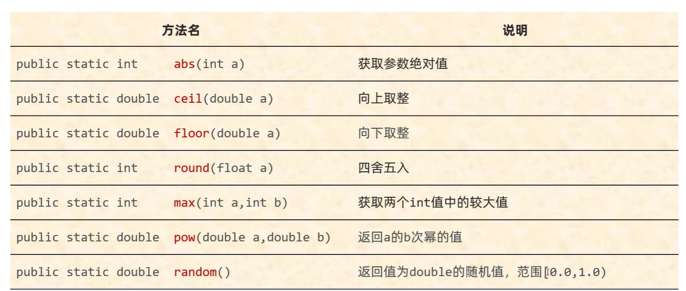
常用的方法
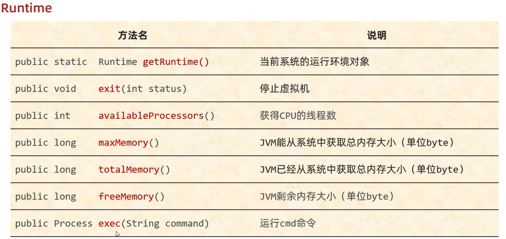
equals方法
toString方法
clone方法
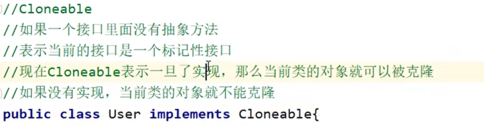
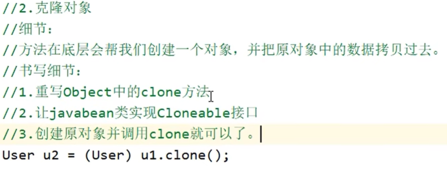
clone 导致的浅拷贝：
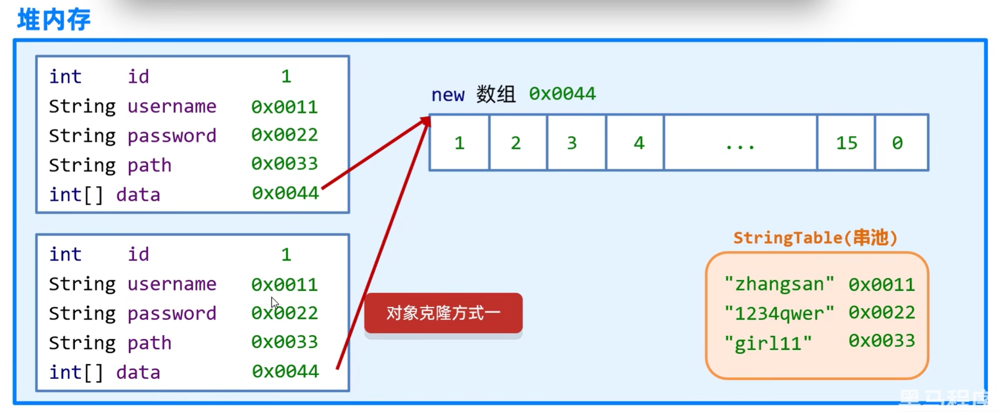
当然也有深克隆：
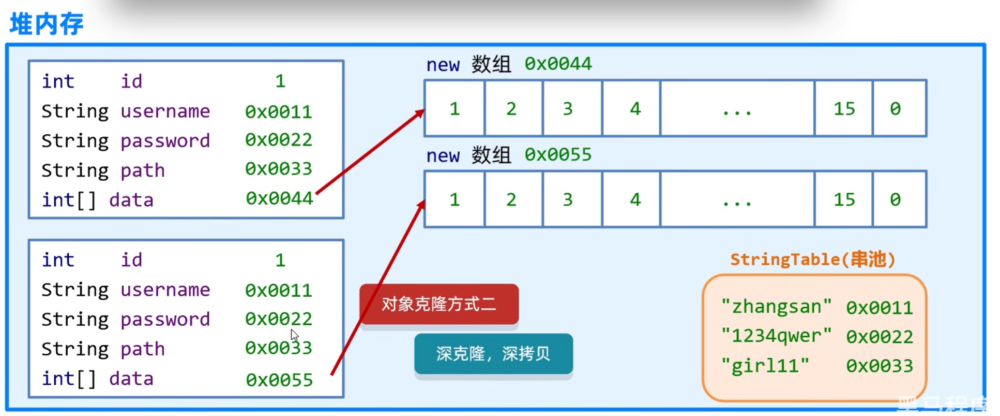
对于数组，会使用new，然而对于字符串String则会复用。
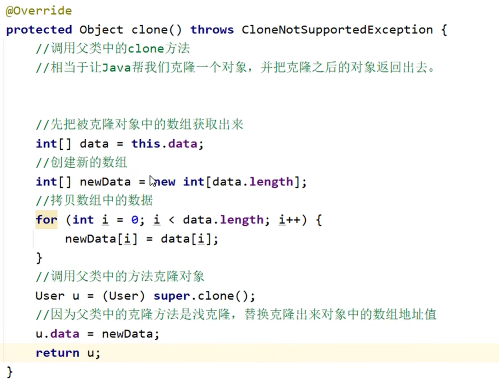
在主函数中
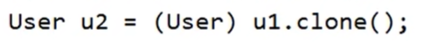
在以后的开发中，我们可能会用到第三方库Gson
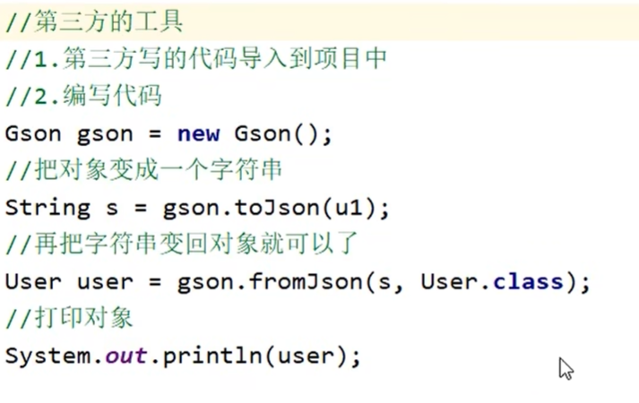
在一般@override equals之后
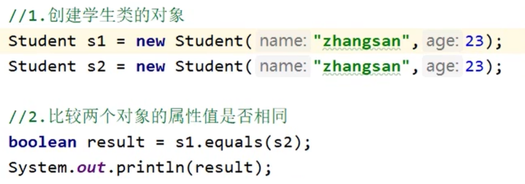
这样写并没有什么问题。但是如果s1的值为null
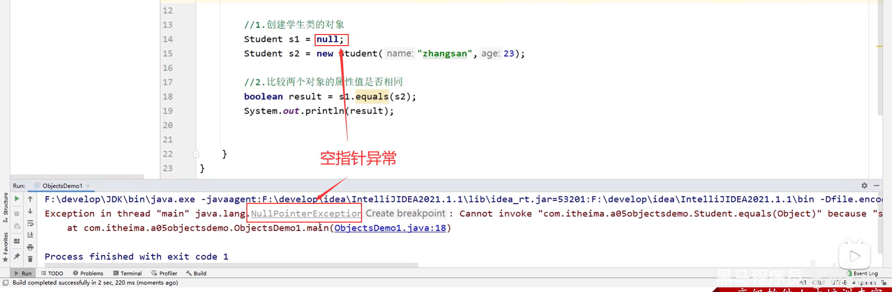
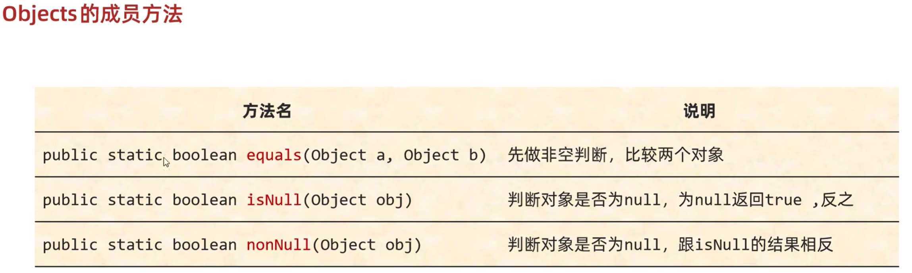
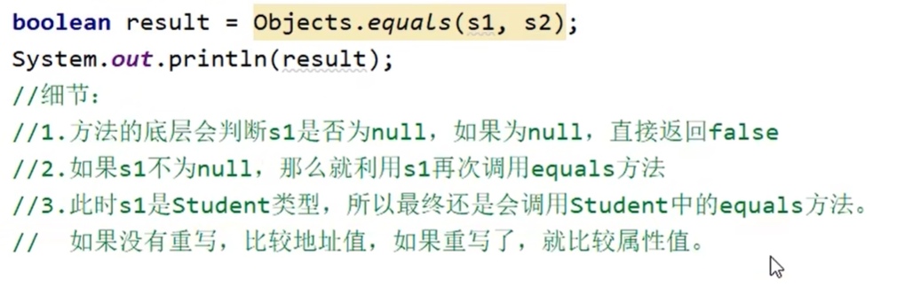
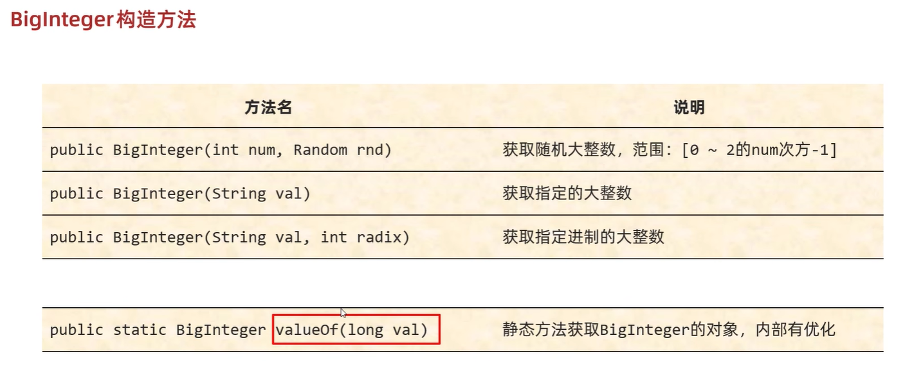
第3个radix是进制数，例如new BigInteger("11011101",2) 就代表是二进制数
其中valueOf() 是 BigInteger类的一个静态方法
小细节：对象一旦创建，值就不能改变。
// 获取一个随机大整数BigInteger bd1 = new BigInteger(4,new Random()); // 输出 [0,16-1]
// 获取一个指定的大整数BigInteger bd2 = new BigInteger = new BigInteger("12356789098765456217893128734861278963897612783612");
// 获取指定进制的大整数BigInteger bd3 = new BigInteger = new BigInteger("100",2); // 结果是4；这里必须和进制数吻合
// 静态方法获取 BigIntegerBigInteger bd4 = new BigInteger.valueOf(100);// 这里的ValueOf只能是Long范围的
// java已经创建好了 -16~16 的BigInteger对象，多次创建不会生成新的BigInteger bd5 = new BigInteger.valueOf(16);BigInteger bd6 = new BigInteger.valueOf(16);System.out.println(bd5==bd6); // True
// 对象一旦创建，值就不允许被改变BigInteger bd7 = new BigInteger.valueOf(1);BigInteger bd8 = new BigInteger.valueOf(2);BigInteger bd9 = bd7.add(bd8); // bd9 != bd8 || bd7
方法：
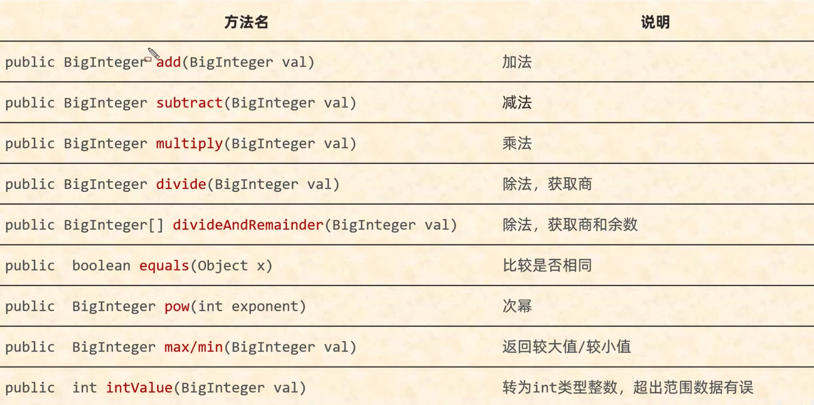
// 加法 BigInteger bd1 = new BigInteger("10"); BigInteger bd2 = new BigInteger("3"); BigInteger bd3 = bd1.add(bd2); System.out.println(bd3);
// 除法 BigInteger[] arr = bd1.divideAndRemainder(bd2); System.out.println(arr[0]); // 结果 System.out.println(arr[1]); // 余数
// 次幂 BigInteger bd4 = bd1.pow(100); System.out.println(bd4);
// 较大较小值 System.out.println(bd1.max(bd2)); System.out.println(bd1.min(bd2));
// 转为Int类型 System.out.println(bd1.intValue());
// 转为Long类型 或者 Float、Double 类型 System.out.println(bd1.longValue()); System.out.println(bd1.floatValue()); System.out.println(bd1.doubleValue());
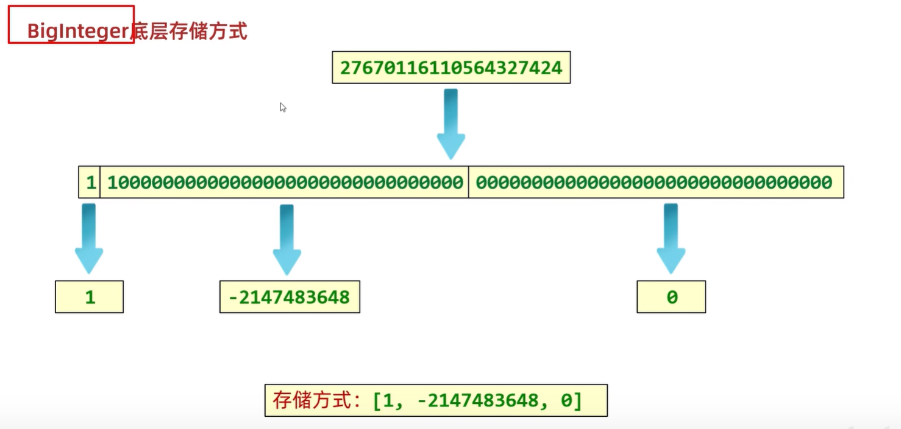
对于一个大数字，首先转为二进制补码后，以32位为一组，拆分成若干组。然后这些组转为INT类型，储存在数组中
数组最大长度是INT最大值[2147483647]，因此BigInteger有上限，但是很大。
计算机中小数的不精确性
//0.09999999999999999//0.11599999999999999//0.010000000000000002System.out.println(0.09+0.01);System.out.println(0.216-0.1);System.out.println(0.1*0.1);
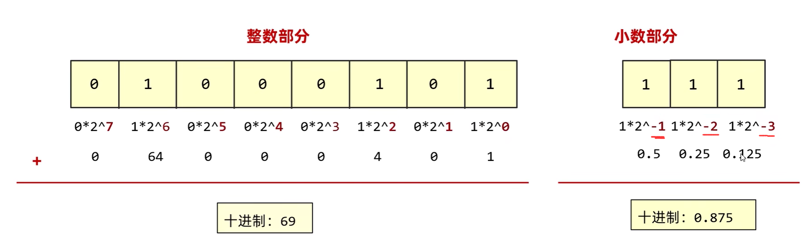
现在，我们关注小数点后的数字 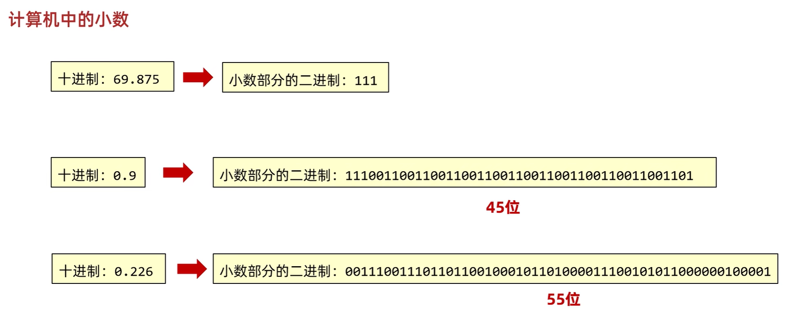
可以发现，某些数字的小数部分二进制是很长的
然而，Java中的float和double留给小数部分是有限的，因此0.226要存入double的话，最后三位会被舍去。
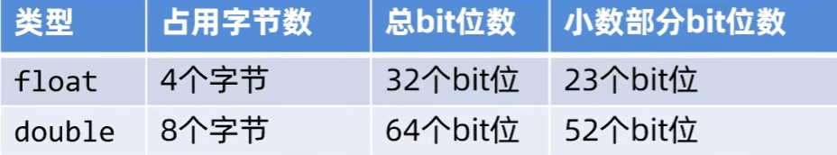
现在我们尝试使用double类型创建BigDecimal对象
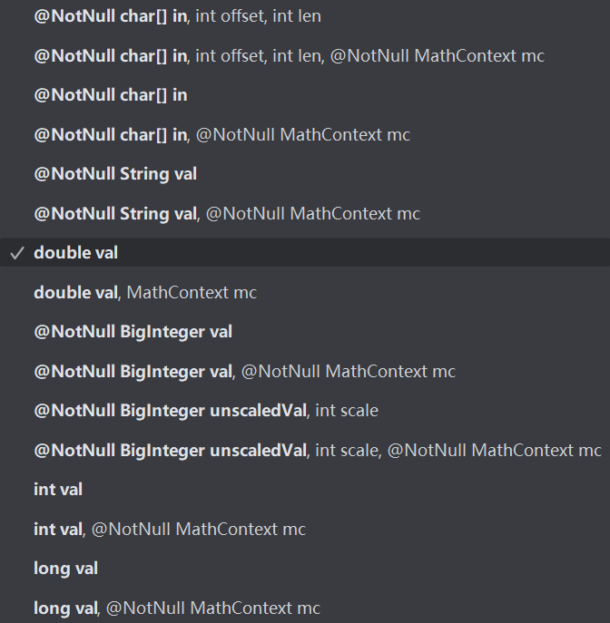
// 这种方式是不精确的，不建议使用System.out.println(bd1); // 0.01000000000000000020816681711721685132943093776702880859375System.out.println(bd2); // 0.0899999999999999966693309261245303787291049957275390625System.out.println(bd1.add(bd2)); // 0.09999999999999999687749774324174723005853593349456787109375可见用double来创建BigDecimal是不精确的
因此，我们一般传递字符串而不是double
BigDecimal bd3 = new BigDecimal("0.01");BigDecimal bd4 = new BigDecimal("0.09");System.out.println(bd3); // 0.01System.out.println(bd4); // 0.09System.out.println(bd3.add(bd4)); // 0.10节约内存：
// 如果传递的是[0,10]的整数，那么就返回已存在的对象BigDecimal bd5 = BigDecimal.valueOf(0);BigDecimal bd6 = BigDecimal.valueOf(0);System.out.println(bd5==bd6); // TRUE加减乘法是一样的，不过除法我们这里说一下
这样写会报错
BigDecimal bd7 = BigDecimal.valueOf(10);BigDecimal bd8 = BigDecimal.valueOf(3);System.out.println(bd7.divide(bd8));Exception in thread "main" java.lang.ArithmeticException: Non-terminating decimal expansion; no exact representable decimal result.at java.base/java.math.BigDecimal.divide(BigDecimal.java:1804)at test.main(test.java:32)
因为这里除不尽
BigDecimal bd7 = BigDecimal.valueOf(10); BigDecimal bd8 = BigDecimal.valueOf(3); System.out.println(bd7.divide(bd8,5, RoundingMode.CEILING));// 3.33334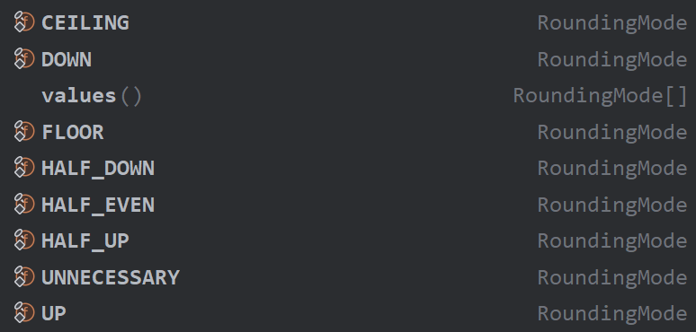
有很多的RoundingMode可供选择
储存模式
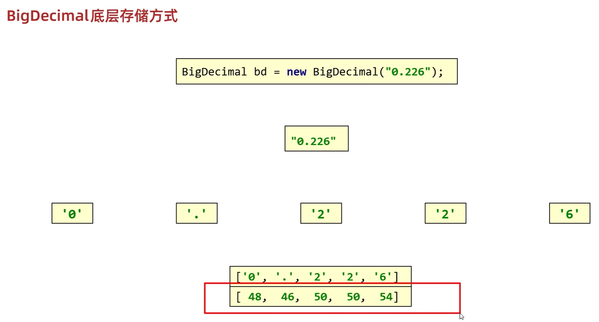
BigDecimal使用了ASCII码的方式进行储存，存到一个数组。
世界标准时间：格林尼治时间（英国）（GreenWich Mean Time GMT）。（有误差）
现在的标准时间：原子钟。用铯原子的震动频率来算。UTC。
JDK7之前的，时间。精确到毫秒。
// 如何创建日期对象？Date date = new Date();Date date = new Date(指定毫秒值);// 如何修改时间对象中的毫秒值setTime(毫秒值);// 如何获取时间对象中的毫秒值getTime();
JDK7之前的，格式化时间。
| 构造方法 | 说明 |
|---|---|
public SimpleDateFormat() | 构造一个SimpleDateFormat，使用默认格式 |
public SimpleDateFormat(String pattern) | 构造一个SimpleDateFormat，使用指定的格式 |
| 常用方法 | 说明 |
|---|---|
public final String format(Date date) | 格式化（日期对象 -> 字符串） |
public Date parse(String source) | 解析（字符串 -> 日期对象） |
简单的部分：
| 字符 | 说明 | 示例1 | 示例2 |
|---|---|---|---|
| y | 年 | 2023 | 2023年 |
| M | 月 | 11 | 11月 |
| d | 日 | 11 | 11日 |
| H | 时 | 13 | 13:27:06 |
| m | 分 | 27 | 2023年11月11日 13:27:06 |
| s | 秒 | 06 | yyyy-MM-dd HH:mm:ss |
public static void main(String[] args) throws ParseException { // SimpleDateFormat作用：1.格式化时间 2.解析时间 Date d1 = new Date(0L); // 设置时间原点 SimpleDateFormat sdf1 = new SimpleDateFormat(); String format1 = sdf1.format(d1); System.out.println(format1); // 1970/1/1 08:00 // 指定时间格式 SimpleDateFormat sdf2 = new SimpleDateFormat("yyyy年MM月dd日 HH:mm[ss秒]"); String format2 = sdf2.format(d1); System.out.println(format2); // 1970年01月01日 08:00[00秒] // 课堂练习：yyyy年MM月dd日 时:分:秒 星期 SimpleDateFormat sdf3 = new SimpleDateFormat("yyyy年MM月dd日 HH:mm:ss E"); String format3 = sdf3.format(d1); System.out.println(format3); // 1970年01月01日 08:00:00 周四 // 解析时间，首先定义一个字符串表示当前时间 String str = "2020年01月01日 08:00:00"; // 然后我们创建一个SimpleDateFormat对象，指定时间格式 // 注意，这里的格式必须和字符串的格式相同，否则解析不了 SimpleDateFormat sdf4 = new SimpleDateFormat("yyyy年MM月dd日 HH:mm:ss E"); Date d2 = sdf4.parse(str); System.out.println(d2); // Wed Jan 01 08:00:00 CST 2020}缩减时间前导0
xxxxxxxxxxSimpleDateFormat sdf2 = new SimpleDateFormat("yyyy年M月d日 HH时mm分ss秒");String formattedTime1 = sdf2.format(date);System.out.println(formattedTime1); // 输出：2023年07月01日 12时00分00秒// 如果还要缩减前导0，可以设置SimpleDateFormat的日期格式SimpleDateFormat sdf3 = new SimpleDateFormat("yyyy年M月d日 H时m分s秒");String formattedTime2 = sdf3.format(date);System.out.println(formattedTime2); // 输出：2023年7月1日 12时0分0秒// 接下来我们看看，去除了前导0的时间能不能被一般的SimpleDateFormat解析SimpleDateFormat sdf4 = new SimpleDateFormat("yyyy年MM月dd日 HH时mm分ss秒");String formattedTime3 = sdf4.format(date);System.out.println(formattedTime3); // 输出：2023年07月01日 12时12分03秒比较时间的方法：
public static void main(String[] args) throws ParseException { // 开始时间为2023-07-01 12:00:00 // 结束时间为2023-07-01 12:10:00 String startTime = "2023-07-01 12:00:00"; String endTime = "2023-07-01 12:10:00"; // 现在我们假设三个时间，分别是开始前，活动中，结束后 String currentTime1 = "2023-07-01 11:59:00"; // 开始前 String currentTime2 = "2023-07-01 12:05:00"; // 活动中 String currentTime3 = "2023-07-01 12:10:01"; // 活动结束 System.out.println(isInTime(startTime, endTime, currentTime1)); // 输出：false System.out.println(isInTime(startTime, endTime, currentTime2)); // 输出：true System.out.println(isInTime(startTime, endTime, currentTime3)); // 输出：false}// 这里写一个方法，来判断是否在秒杀时间内。public static boolean isInTime(String startTime, String endTime, String currentTime) throws ParseException { // 首先，生成格式 SimpleDateFormat sdf = new SimpleDateFormat("yyyy-MM-dd HH:mm:ss"); // 然后，把时间都转成Date类型 Date startDate = sdf.parse(startTime); Date endDate = sdf.parse(endTime); Date currentDate = sdf.parse(currentTime); // 如果刚好是开始时间或者结束时间，直接返回true if (currentDate.equals(startDate) || currentDate.equals(endDate)) { return true; } return currentDate.after(startDate) && currentDate.before(endDate);}
JDK7之前的，日历。
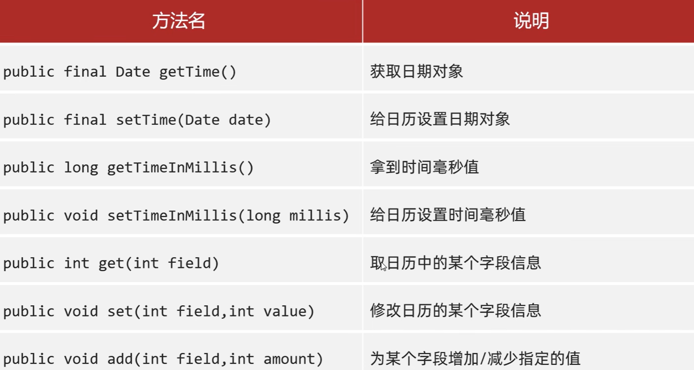
xxxxxxxxxx// Calendar：代表了系统当前的时间日历对象// 可以单独修改、获取时间中的年、月、日、时、分、秒等。public static void main(String[] args) { // 1.获取日历对象 // 细节：Calendar是抽象类，不能直接创建对象,需要使用其子类创建对象。 // 底层原理：根据系统的不同时区，创建不同的日历对象。 // 会把时间纪元、年月日时分秒星期等都放在一个数组中。 Calendar calendar = Calendar.getInstance(); System.out.println(calendar); // 输出如下}xxxxxxxxxxjava.util.GregorianCalendar[time=1737043949772,areFieldsSet=true,areAllFieldsSet=true,lenient=true,zone=sun.util.calendar.ZoneInfo[id="Asia/Shanghai",offset=28800000,dstSavings=0,useDaylight=false,transitions=31,lastRule=null],firstDayOfWeek=2,minimalDaysInFirstWeek=1,ERA=1,YEAR=2025,MONTH=0,WEEK_OF_YEAR=3,WEEK_OF_MONTH=3,DAY_OF_MONTH=17,DAY_OF_YEAR=17,DAY_OF_WEEK=6,DAY_OF_WEEK_IN_MONTH=3,AM_PM=0,HOUR=0,HOUR_OF_DAY=0,MINUTE=12,SECOND=29,MILLISECOND=772,ZONE_OFFSET=28800000,DST_OFFSET=0]public static void main(String[] args) { // 尝试修改日历的时间，例如原点。 Calendar calendar = Calendar.getInstance(); Date d = new Date(); calendar.setTime(d); // 细节2：在日历对象中，这里的月份是0.因此月份范围是0~11。 // 也就是获取的如果是0，表示1月。也就是要加1。 // 在老外的眼里，星期日是一周的第一天。因此WEEK=1代表周日。 // 1（星期日） 2（星期一） 3（星期二） 4（星期三） 5（星期四） 6（星期五） // 尝试获取Calendar的某个属性，例如，获取年月日. /*System.out.println(calendar.get(Calendar.YE +calendar.get(Calendar.MONTH)+ "月"+calendar.get(Calendar.DAY_OF_MONT // Calendar记录数组有17个属性。然后我们可以通过调用常量，获取到对应的值。 // Calendar.ERA = 0; 代表年代。 // Calendar.YEAR = 1; 代表年份。 // Calendar.MONTH = 2; 代表月份。 // Calendar.WEEK_OF_YEAR = 3; 代表一年中的周数。 // Calendar.WEEK_OF_MONTH = 4; 代表一月中的周数。 // Calendar.DAY_OF_MONTH = 5; 代表一月中的天数。 // Calendar.DAY_OF_YEAR = 6; 代表一年中的天数。 // Calendar.DAY_OF_WEEK = 7; 代表星期几。 // Calendar.DAY_OF_WEEK_IN_MONTH = 8; 代表一月中的星 // Calendar.AM_PM = 9; 代表上午还是下午。 // Calendar.HOUR = 10; 代表24小时制。 // Calendar.HOUR_OF_DAY = 11; 代表12小时制 // Calendar.MINUTE = 12; 代表分钟。 // Calendar.SECOND = 13; 代表秒。 // Calendar.MILLISECOND = 14; 代表毫秒。 // Calendar.ZONE_OFFSET = 15; 代表时区。 // Calendar.DST_OFFSET = 16; 代表夏令时。 // Calendar.FIELD_COUNT = 17; 代表字段的数量。}public static void main(String[] args) { Calendar calendar = Calendar.getInstance(); Date originalDate = new Date(0L); // 原点 // 首先，这个日历是原点日历 calendar.setTime(originalDate); // 现在，我们要把它设为当前的年份，其他不变 calendar.set(Calendar.YEAR, 2025); System.out.println(calendar.get(Calendar.YEAR)); // 2025 // 然后调整为5月 calendar.set(Calendar.MONTH, 5-1); // -1 是因为月份是从0开始的 System.out.println(calendar.get(Calendar.MONTH)+1); // 5 // 最后，调整为10号 calendar.set(Calendar.DAY_OF_MONTH, 10); System.out.println(calendar.get(Calendar.DAY_OF_MONTH)); // 10 // 细节1：月份是从0开始的，因此需要减1。 // 细节2：周日是一周的第一天，因此WEEK=1代表周日。}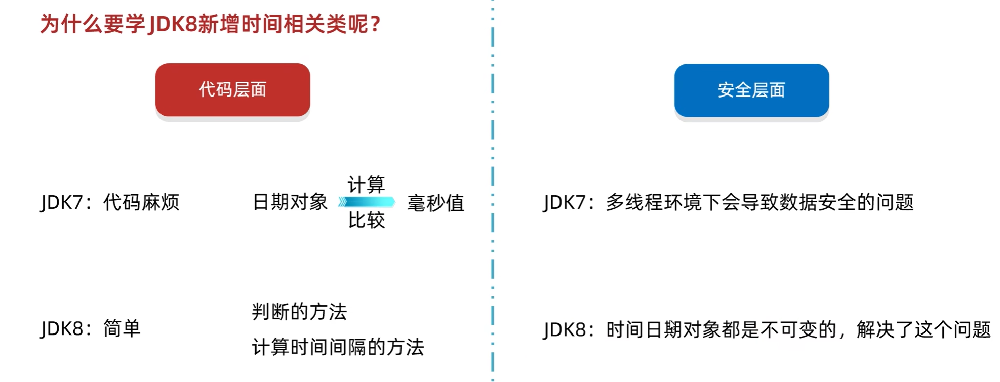
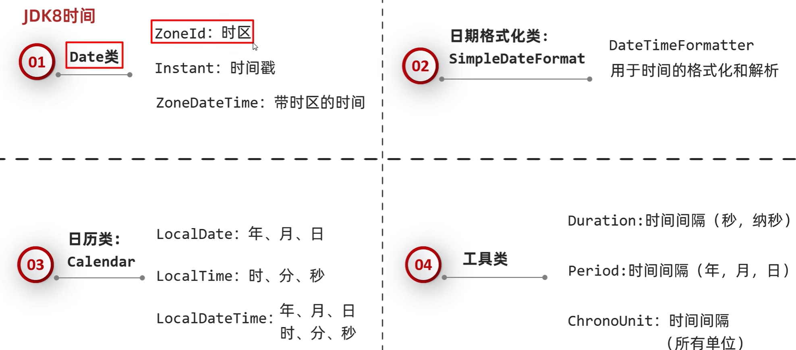
ZoneID的格式如下
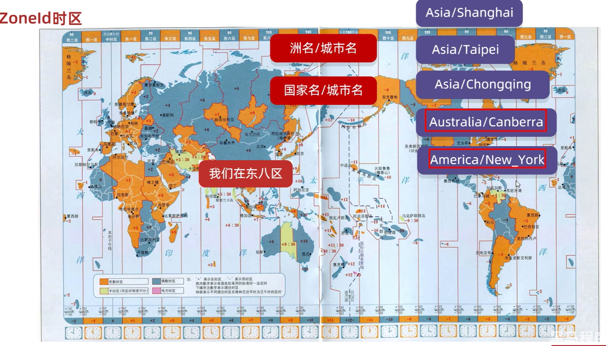
中国经常用的是Asia/Shanghai。当然不用记，我们可以通过如下方法获取到600个可用的时区。
| 方法名 | 说明 |
|---|---|
| static Set | 获取Java中支持的所有时区 |
| static ZoneId systemDefault() | 获取系统默认时区 |
| static ZoneId of(String zoneId) | 获取一个指定时区 |
public static void main(String[] args) { // 获取可用时区 Set<String> availableZoneIds = ZoneId.getAvailableZoneIds(); System.out.println(availableZoneIds); System.out.println("Size = "+availableZoneIds.size()); // 获取系统当前时区 ZoneId zoneId = ZoneId.systemDefault(); System.out.println(zoneId); // 获取指定时区，例如新加坡 ZoneId zoneSingapore = ZoneId.of("Asia/Singapore"); System.out.println(zoneSingapore);}[Asia/Aden, America/Cuiaba, Etc/GMT+9, Etc/GMT+8, Africa/Nairobi, America/Marigot, Asia/Aqtau, Pacific/Kwajalein, ...]Size = 603Asia/ShanghaiAsia/Singapore
| 方法名 | 说明 |
|---|---|
static Instant now() | 获取当前时间的Instant对象（标准时间）。因此中国要+8. |
static Instant ofXxx(long epochMilli) | 根据（秒/毫秒/纳秒）获取Instant对象 |
ZonedDateTime atZone(ZoneId zone) | 指定时区 |
boolean isXxx(Instant otherInstant) | 判断系列的方法 |
Instant minusXxx(long millisToSubtract) | 减少时间系列的方法 |
| Instant plusXxx(long millisToSubtract) | 增加时间系列的方法 |
// 获取世界标准时间Instant now = Instant.now();System.out.println(now); // 2025-01-16T17:10:43.403487800Z 这里的z是纳秒// 获取世界标准时间，并指定时间戳Instant originalTime1 = Instant.ofEpochMilli(1L);System.out.println(originalTime1); // 1970-01-01T00:00:00.001Z// 获取世界标准时间，并指定秒和纳秒Instant originalTime2 = Instant.ofEpochSecond(1L);System.out.println(originalTime2);// 获取世界标准时间，并指定秒和纳秒Instant originalTime3 = Instant.ofEpochSecond(1L, 1000000000L); // 1System.out.println(originalTime3); // 就是过了2s，因此是1970-01-01T00:00:02Z| 方法名 | 说明 |
|---|---|
static ZonedDateTime now() | 获取当前时间的ZonedDateTime对象 |
static ZonedDateTime ofXxx(...) | 获取指定时间的ZonedDateTime对象 |
ZonedDateTime withXxx(时间) | 修改时间系列的方法 |
ZonedDateTime minusXxx(时间) | 减少时间系列的方法 |
ZonedDateTime plusXxx(时间) | 增加时间系列的方法 |
DateTimeFormatter
| 方法名 | 说明 |
|---|---|
static DateTimeFormatter ofPattern(格式) | 获取格式对象 |
String format(时间对象) | 按照指定方式格式化 |
public static void main(String[] args) { // 任务：获取当前时间，然后输出....年....月....日 时分秒 星期几，上下午 ZonedDateTime zonedDateTime = Instant.now().atZone(ZoneId.of("Asia/Shanghai")); DateTimeFormatter fmt = DateTimeFormatter.ofPattern("yyyy年MM月dd日 HH时mm分ss秒 EE a"); System.out.println(zonedDateTime.format(fmt)); // 2025年01月17日 01时27分56秒 周五 上午}LocalDate只包含年月日，LocalTime只包含时分秒。但是LocalDateTime包含年月日和时分秒。
// LocalDateLocalDate ld = LocalDate.now();System.out.println(ld); // 2025-01-17LocalDate ld1 = LocalDate.of(2024, 2,29);System.out.println(ld1.getMonth()+"月");// LocalTimeLocalTime lt = LocalTime.now();System.out.println(lt); // 11:49:58.406514400LocalTime lt1 = LocalTime.of(12, 12, 12);System.out.println(lt1.getHour()); // 12'// LocalDateTimeLocalDateTime ldt = LocalDateTime.now();System.out.println(ldt); // 2025-01-17T11:51:20.956250200 这里的T指的是时间System.out.println(ldt.atZone(ZoneId.of("Asia/Shanghai")));更全面，直接包括Duration和Period
public static void main(String[] args) { // Period LocalDate d1 = LocalDate.of(2005,4,23); LocalDate d2 = LocalDate.now(); Period p = Period.between(d1,d2); System.out.println("离你的出生日期已经过了"+p.getYears()+"年"+p.getMonths()+"月"+p.getDays()+"天"); // Duration LocalDateTime d3 = LocalDateTime.of(2005,4,23,0,0,0); LocalDateTime d4 = LocalDateTime.now(); Duration d = Duration.between(d3,d4); System.out.println("离你的出生日期已经过了"+d.toHours()+"小时"); System.out.println("即已经过了"+d.toMinutes()+"分钟"); System.out.println("即已经过了"+d.toMillis()+"毫秒"); System.out.println("即已经过了"+d.toNanos()+"纳秒"); // ChronoUnit相比上面更全面，而且不用创建对象 System.out.println("相隔的纪元="+ChronoUnit.DAYS.between(d3,d4)); System.out.println("相隔的年份="+ChronoUnit.YEARS.between(d3,d4)); System.out.println("相隔的月数="+ChronoUnit.MONTHS.between(d3,d4)); System.out.println("相隔的周数="+ChronoUnit.WEEKS.between(d3,d4)); System.out.println("相隔的天数="+ChronoUnit.DAYS.between(d3,d4)); System.out.println("相隔的小时数="+ChronoUnit.HOURS.between(d3,d4)); System.out.println("相隔的分钟数="+ChronoUnit.MINUTES.between(d3,d4)); System.out.println("相隔的秒数="+ChronoUnit.SECONDS.between(d3,d4)); System.out.println("相隔的毫秒数="+ChronoUnit.MILLIS.between(d3,d4)); System.out.println("相隔的微秒数="+ChronoUnit.MICROS.between(d3,d4)); System.out.println("相隔的纳秒数="+ChronoUnit.NANOS.between(d3,d4)); System.out.println("相隔的半天数="+ChronoUnit.HALF_DAYS.between(d3,d4)); System.out.println("相隔的世纪数="+ChronoUnit.CENTURIES.between(d3,d4)); System.out.println("相隔的千年数="+ChronoUnit.MILLENNIA.between(d3,d4)); System.out.println("相隔的年代数="+ChronoUnit.ERAS.between(d3,d4));}
指的是基本数据类型对应的引用数据类型。
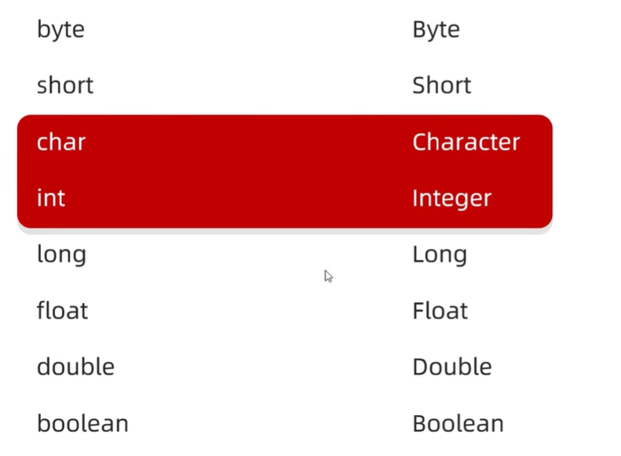
获取包装类对象（只做了解）。
x
// 利用构造方法获取Integer对象Integer a = new Integer(1);// 利用静态方法获取Integer对象Integer.valueOf(123);Integer.valueOf("123");Integer.valueOf(123,8);// 8进制下的123
// 这两种方法的区别？（需要掌握）
Integer i6 = Integer.valueOf(127);Integer i7 = Integer.valueOf(127);System.out.println(i6 == i7); // TRUE
Integer i8 = Integer.valueOf(128);Integer i9 = Integer.valueOf(128);System.out.println(i8 == i9); // FALSE
Integer i10 = new Integer(127);Integer i11 = new Integer(127);System.out.println(i10 == i11); // FALSE
Integer i12 = new Integer(128);Integer i13 = new Integer(128);System.out.println(i12 == i13); // FALSE